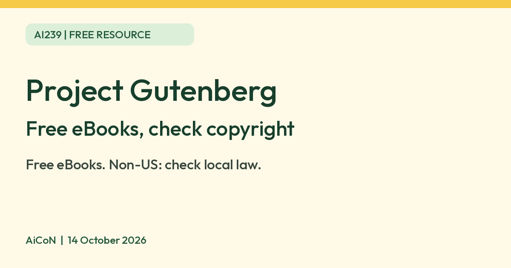

Project Gutenberg: free eBooks, with an India caveat
Project Gutenberg offers free eBooks of older works. Its terms tell readers outside the US to check the copyright laws of their own country first.

Project Gutenberg logo
What it is
Project Gutenberg is an online library of free eBooks. Its homepage says it has "79,594 free eBooks" and that you can download them or read online. It focuses on "older works whose U.S. copyright has expired", digitised and proofread by volunteers. It is not an AI tool. We included it because it is a free resource from an official source.
Is it free?
Yes. The homepage calls it a library of free eBooks, and the privacy policy says no personally identifiable information is collected beyond your IP address. This is a privacy claim about its website, not proof of a paid or free tier. We found no registration requirement or paid tier on the pages we read.
India: check before you download
- The Terms of Use say the target audience is "United States persons over 13 years of age".
- They also say non-US persons should check the copyright laws of their own country first, that some content may be copyrighted or restricted outside the US, and that Project Gutenberg gives no assurance about freedom to use its materials outside the United States.
- So a book that is out of copyright in the US may not be in India. We did not check Indian copyright rules.
What you get
- Mostly older books, many in English. We did not count languages.
- The FAQ says it publishes in open formats and wants a plain text version of everything possible. We did not check every format.
Privacy and data
- The privacy policy says no personally identifiable information is collected except your IP address, that it does not use third-party tools such as Google Analytics, and that it does not allow web trackers.
- It says access logs, including your IP address, are deleted after at most 60 days. It says the site may use cookies and captchas.
How to start
- Read the Terms of Use first, especially the warning for readers outside the United States.
- Check whether the specific work can lawfully be accessed and used in your country. This guide does not provide legal clearance.
- If permitted, use the official website to find the work and open its book landing page. Review the listed author, edition, language and available formats.
- Choose a listed reading or download option that suits your device. Check the book's licence before sharing it. AiCoN did not open or download any book.
What changed since this post?
Official homepage, terms, privacy policy and FAQ rechecked on 14 October 2026. The homepage currently lists 79,594 free eBooks; that count can change. The warning for non-US readers remains. Logo/source/licence credit and an India warning beside the lead added. No Indian copyright-law check or individual title clearance was performed.
Frequently asked questions
Is Project Gutenberg free?
Yes. It describes itself as a library of free eBooks.
Can I use it in India?
Its terms tell non-US persons to check their own country's copyright laws first.
Is it AI?
No. We included it because it is a free resource from an official source.
Sources: Project Gutenberg, Terms of Use, Privacy policy, FAQ. Checked 14 October 2026.
Logo: Project Gutenberg logo by Dianakc, CC BY-SA 3.0 (Wikimedia Commons, file page). Independent guide, not affiliated.